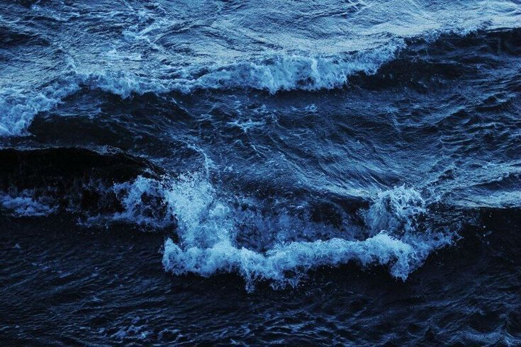
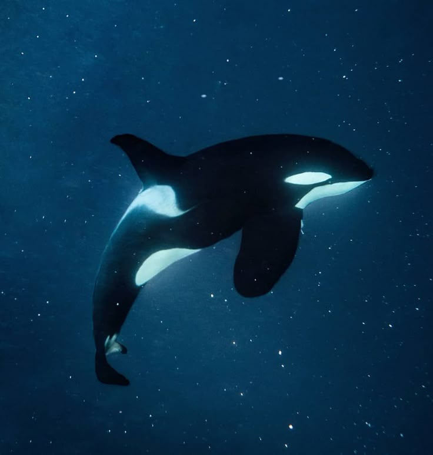
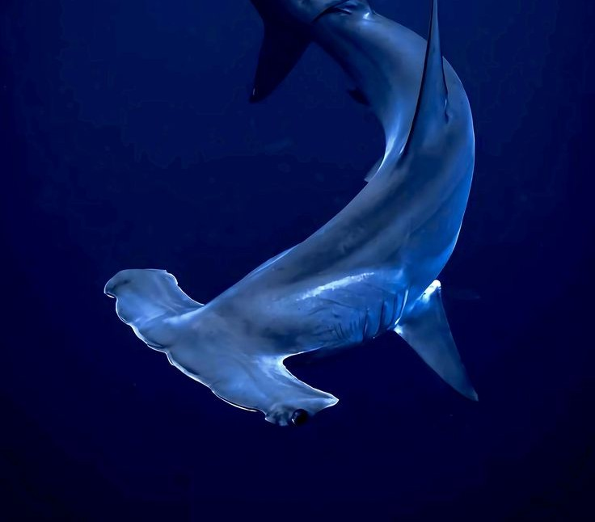
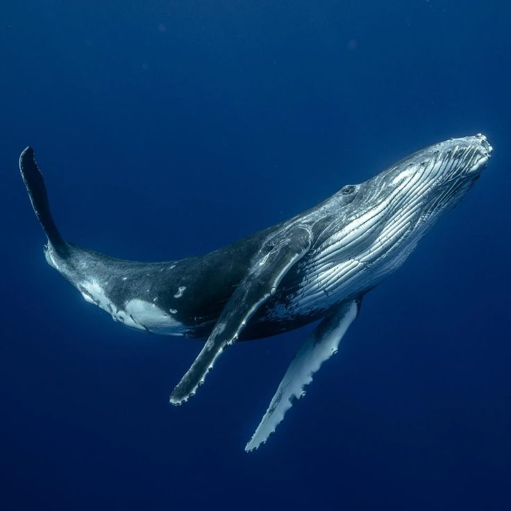

es el miembro más grande de la familia de los delfines oceánico. Conocida por su característico patrón de color blanco y negro, es uno de los superdepredadores más formidables y adaptables del planeta

El tiburón martillo es un fascinante pez cartilaginoso famoso por su cabeza en forma de "T" o martillo. Habita en aguas tropicales y templadas de todo el mundo. Esta singular estructura craneal mejora su visión de 360 grados y la localización de presas como rayas mediante electrorrecepción.

La ballena azul es el animal más grande que ha existido en la Tierra. Puede medir hasta 30 metros de longitud y superar las 150 toneladas de peso. Es una especie en peligro de extinción que se alimenta casi exclusivamente de krill y habita en todos los océanos